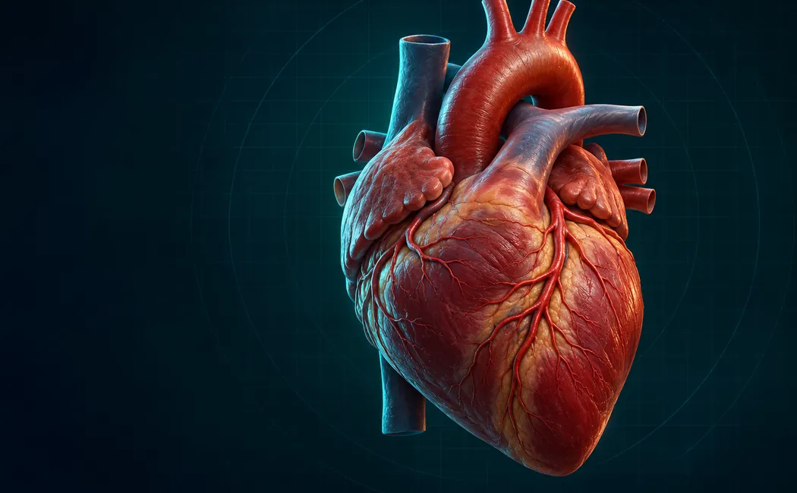

Captação · 10 eletrodos
Quatro eletrodos nos membros e seis no tórax. Cada derivação registra uma diferença de potencial entre dois polos.
Ver colocaçãoGuia visual de aquisição e leitura para profissionais da saúde.

Quando o coração se ativa, diferenças de potencial podem ser registradas na superfície do corpo. Cada derivação compara esses potenciais de um modo próprio. Por isso, o mesmo batimento pode parecer positivo, negativo ou quase isoelétrico, dependendo da direção em que é observado.
Comece pela origem do sinal, siga para a colocação dos eletrodos e compare os padrões no simulador. Para consulta rápida, vá direto ao mapa que você precisa.
Abrir apostila em PDFQuatro eletrodos nos membros e seis no tórax. Cada derivação registra uma diferença de potencial entre dois polos.
Ver colocaçãoFrontal · I, II, III, aVR, aVL e aVF.
Horizontal · V1 a V6.
Ver eixos e polosP · Despolarização atrial.
QRS · Despolarização ventricular.
T · Repolarização ventricular.
25 mm/s · 1 mm = 40 ms.
50 mm/s · 1 mm = 20 ms.
10 mm/mV · 1 mm = 0,1 mV.
Os graus localizam o polo positivo de cada derivação no plano frontal. A referência de 0° aponta para a esquerda anatômica do paciente.
| Derivação | Ângulo | Polo positivo − referência |
|---|---|---|
| I | 0° | LA − RA |
| II | +60° | LL − RA |
| III | +120° | LL − LA |
| aVR | −150° | RA − (LA + LL) / 2 |
| aVL | −30° | LA − (RA + LL) / 2 |
| aVF | +90° | LL − (RA + LA) / 2 |
Revise a montagem antes de interpretar o traçado. As etapas a seguir se aplicam ao ECG convencional de repouso.
Confirme a identidade, explique o exame, preserve a privacidade e registre os sintomas e o horário. Para o ECG convencional de repouso, acomode em decúbito dorsal quando possível e documente outra posição.
Mantenha a pele limpa e seca. Remova pelos no ponto de contato, se necessário e conforme o protocolo. Verifique a aderência dos eletrodos e alivie a tração dos cabos.
Confira as siglas e a lateralidade. Use os membros para RA, LA, RL e LL na montagem convencional e os marcos anatômicos para V1–V6. Posicione V4 antes de V3.
Confira velocidade, ganho e qualidade do sinal. No repouso, peça que a pessoa relaxe, evite falar e permaneça imóvel durante a aquisição. Reavalie o contato antes de usar filtros adicionais.
Confirme as 12 derivações, a calibração, a estabilidade da linha de base e a coerência entre derivações. Identifique modificações na posição ou montagem e registre as circunstâncias da aquisição.
Confirme identificação, data, velocidade, ganho, artefatos e montagem. A 25 mm/s, um quadrado de 1 mm equivale a 40 ms. A 50 mm/s, equivale a 20 ms. Com ganho de 10 mm/mV, 1 mm na vertical vale 0,1 mV.
Em ritmo regular, use FC = 60 ÷ RR em segundos. A 25 mm/s, três quadrados grandes entre picos R correspondem a 0,60 s e 100 bpm. Em ritmo irregular, conte os QRS em um intervalo conhecido e extrapole por minuto.
Identifique ondas P ou atividade atrial alternativa. Compare os intervalos PP e RR. Meça o PR do início da P ao início do QRS e verifique se existe condução 1:1.
Examine a polaridade líquida em I e aVF para estimar o quadrante e use DII quando I for positivo e aVF negativo. Compare largura, progressão de R e morfologia nas precordiais e derivações dos membros.
Localize o ponto J e avalie ST e T em derivações contíguas. Meça QT do início do QRS ao fim de T e anote o método de correção para a frequência quando aplicar QTc. Compare com ECG prévio e integre os achados ao contexto.
Registre o ECG basal, a posição do corpo e a configuração usada. Se o protocolo muda os eletrodos dos membros para o tronco, documente a montagem e obtenha o traçado de referência na configuração do teste.
No teste supervisionado, acompanhe a frequência, o ritmo, o ST, os sintomas, a carga e a pressão arterial conforme o protocolo. Fixe cabos e eletrodos para reduzir artefatos de movimento.
Continue o registro conforme o protocolo e observe a evolução da frequência, do ritmo, dos sintomas e de alterações de ST. Compare trechos com montagem e calibração compatíveis.
Abra um dos 16 estados rápidos e observe o detalhe indicado. A apostila reúne os traçados ilustrativos correspondentes.
Ritmo sinusal regular, usado como comparação no simulador.
Por que aparece assim. O nó sinusal inicia a ativação atrial. A onda P precede cada QRS, com PR estável. A condução habitual pelo sistema His–Purkinje coordena os ventrículos e produz QRS estreito.
Onde olhar · DII. Observe uma P antes de cada QRS e a distância semelhante entre os picos R.
Ritmo de origem sinusal com frequência acima de 100 bpm no adulto.
Por que aparece assim. O nó sinusal dispara mais vezes por minuto. O trajeto da ativação permanece sinusal, por isso a relação entre P e QRS se conserva. O intervalo RR encurta.
Onde olhar · DII. Compare a distância entre os picos R mantendo a velocidade do registro. O esforço é um dos contextos em que a frequência pode aumentar.
Ritmo de origem sinusal com frequência abaixo de 60 bpm no adulto.
Por que aparece assim. O nó sinusal dispara com menor frequência. A ativação atrial e a condução aos ventrículos seguem a sequência habitual. O RR aumenta e a relação P–QRS permanece.
Onde olhar · DII. Compare o espaçamento com o ritmo de referência. Sono, treinamento e medicamentos podem modificar a frequência.
Batimento precoce que começa em um foco atrial fora do nó sinusal.
Por que aparece assim. A ativação atrial segue outra direção e pode mudar a forma da P, às vezes sobreposta à T anterior. Quando o impulso usa a via habitual até os ventrículos, o QRS tende a ser estreito. O ciclo sinusal pode ser reiniciado.
Onde olhar · DII. Procure a P que chega cedo. Também existem extrassístoles atriais bloqueadas ou conduzidas com aberrância.
Batimento precoce que começa no ventrículo.
Por que aparece assim. Parte da ativação se propaga pelo miocárdio em outra sequência, produzindo um QRS geralmente largo e sem P condutora correspondente. A repolarização também pode mudar. A pausa compensatória é frequente.
Onde olhar · V1. Compare a largura e a forma do batimento precoce com os complexos vizinhos. A pausa varia entre casos.
Ativação atrial desorganizada com resposta ventricular em geral irregular.
Por que aparece assim. Os átrios perdem uma frente de ativação organizada e, por isso, faltam ondas P discretas. Os impulsos chegam ao nó AV em momentos variáveis e apenas parte deles é conduzida, criando RR irregularmente irregular.
Onde olhar · DII. Observe vários intervalos RR. As oscilações da linha de base podem ser discretas.
Taquicardia atrial organizada, geralmente sustentada por macrorreentrada.
Por que aparece assim. A ativação atrial percorre repetidamente um circuito e produz ondas F regulares. No flutter típico, o aspecto em serrilha costuma aparecer nas derivações inferiores. No exemplo 4:1, um em cada quatro ciclos atriais é conduzido aos ventrículos.
Onde olhar · DII. Compare a regularidade das ondas F com a irregularidade ventricular do exemplo de fibrilação atrial.
Atraso da condução atrioventricular com PR acima de 200 ms no adulto.
Por que aparece assim. A ativação ventricular começa mais tarde após cada onda P. Todos os impulsos atriais são conduzidos neste padrão, então há um QRS para cada P e o intervalo PR permanece prolongado.
Onde olhar · DII. Meça do início da P ao início do QRS. A relação 1:1 diferencia este padrão de um bloqueio com ondas P não conduzidas.
A ativação do ventrículo direito termina mais tarde.
Por que aparece assim. O ventrículo esquerdo é ativado primeiro pela via preservada. As forças terminais dirigem-se para a direita e anteriormente, gerando R′ terminal em V1 e S terminal larga em I e V6. No BRD completo, o QRS dura pelo menos 120 ms.
Onde olhar · V1. Compare a parte terminal do QRS em V1 com a de V6.
A ativação do ventrículo esquerdo ocorre por uma sequência alterada e mais lenta.
Por que aparece assim. A ativação inicial parte do lado direito e se propaga para a esquerda. Isso alarga o QRS, favorece força negativa em V1 e R ampla, por vezes entalhada, nas derivações laterais. ST e T podem ser secundariamente discordantes.
Onde olhar · V6. Compare V1 com I ou V6. A morfologia em conjunto é mais informativa que um entalhe isolado.
A via fascicular anterossuperior esquerda conduz com atraso ou deixa de conduzir.
Por que aparece assim. A ativação inicial segue pelo fascículo posteroinferior. As forças predominantes dirigem-se depois para cima e à esquerda, favorecendo qR em aVL e rS nas inferiores. Apenas um fascículo está envolvido, e o QRS pode continuar estreito.
Onde olhar · aVL. Compare aVL com II, III e aVF. Desvio do eixo para a esquerda deve ser interpretado junto da morfologia.
Padrão eletrocardiográfico que pode sugerir aumento de massa ventricular esquerda.
Por que aparece assim. Forças de despolarização mais intensas em direção ao ventrículo esquerdo podem produzir R alta em V5/V6 e S profunda em V1. Alterações secundárias de ST–T podem coexistir.
Onde olhar · V5. Compare V1 com V5/V6. Voltagem depende de fatores como biotipo e idade e, isoladamente, não demonstra hipertrofia anatômica.
Descrição de achados de repolarização, como T achatada ou invertida e pequeno desvio de ST.
Por que aparece assim. A recuperação elétrica dos ventrículos e a relação entre suas regiões podem mudar por diferentes motivos. A projeção resultante altera o segmento ST e/ou a onda T sem fornecer, por si só, a causa.
Onde olhar · V5. Confira colocação, ruído e ECG prévio. Considere o contexto clínico e a distribuição das alterações.
Segmento ST abaixo da linha de referência.
Por que aparece assim. Diferenças de potencial entre regiões do miocárdio durante o período do ST deslocam a inscrição em relação à linha de base. Na isquemia, correntes de lesão podem produzir essa projeção. Sobrecarga, condução alterada e outros fatores também podem contribuir.
Onde olhar · V5. Localize o ponto J e descreva amplitude, forma e derivações envolvidas. Compare com o traçado de repouso quando estiver avaliando esforço.
Segmento ST acima da linha de referência.
Por que aparece assim. Uma diferença de potencial entre regiões ventriculares pode deslocar o ST na direção positiva da derivação. Isquemia aguda é uma das causas. Repolarização precoce, pericardite e outros padrões podem produzir elevação por mecanismos distintos.
Onde olhar · V3. Observe derivações contíguas, alterações recíprocas, evolução e sintomas. Em suspeita de síndrome coronariana aguda, siga o protocolo assistencial de urgência.
Deflexão inicial negativa que, em determinados padrões, pode refletir perda de forças elétricas locais.
Por que aparece assim. Se uma região contribui menos para as forças iniciais, como pode ocorrer após infarto, os vetores de áreas preservadas passam a predominar e podem se afastar do polo positivo. Isso produz uma Q inicial mais larga ou profunda nas derivações correspondentes.
Onde olhar · DIII. Aplique critérios por derivação e em conjunto. Uma Q isolada em DIII pode ser variante.